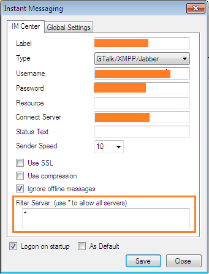
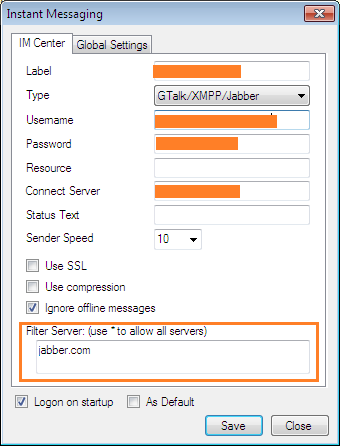

Filter Server
Di (minimal) versi 3.6.9 tersedia fitur baru bernama Filter Server, letaknya di Modul IM Center. Ini berguna untuk menentukan akun Jabber/XMPP dapat menerima atau mengirim pesan instant dari atau ke server Jabber/XMPP mana saja. Misalnya kita mempunyai akun: myid_jbr@jabber.com; jabber.com disebut dengan server Jabber/XMPP.
Kemudian, bagaimana pemanfaatan fitur di atas, sebagai berikut:
- Pilih Modul IM Center -> klik kanan -> klik Setting
-
Apabila menghendaki akun Jabber/XMPP Anda dapat menerima atau mengirim dari atau ke semua server Jabber/XMPP, pada box: Filter Server isi dengan tanda * (asterik)

-
Dan, apabila menghendaki akun Jabber/XMPP Anda hanya dapat menerima atau mengirim dari atau ke server Jabber/XMPP tertentu, pada box: Filter Server isi dengan server Jabber/XMPP tertentu tersebut (pisahkan dengan tanda koma atau titik koma jika lebih dari 1). Misalnya di modul IM Center Anda memasang akun myid_jbr@jabber.com dan menginginkan akun tersebut hanya dapat menerima atau mengirim pesan dari atau ke sesama akun dari server jabber.com, lakukan seperti gambar di bawah ini:

- Klik tombol Save
- Selesai
Jika memiliki pertanyaan terkait fitur di atas silahkan kirimkan ke alamat email support@otomax-software.com atau klik disini